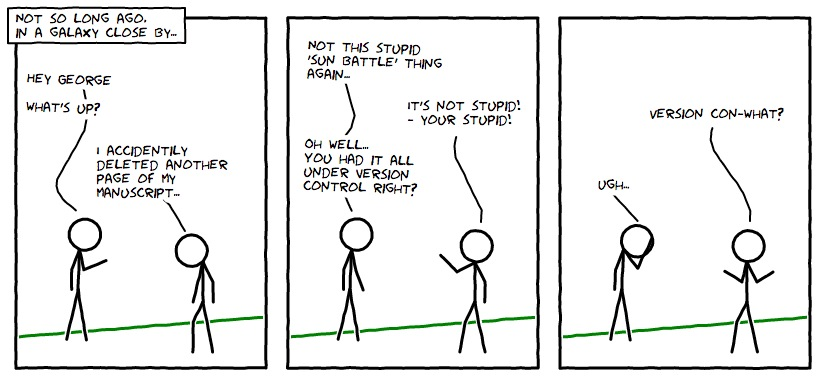

Version Control Tutorial¶

Created using the awesome Comix I/O ... and yes, this comic is under version control. :)
These are the course notes for the Version Control session of the 2013 ASA/ANITA Astroinformatics Summer School.
This session introduces the concept of version control and its particular importance for researchers. We will also try out some practical examples using the Git version control system and touch on the following topics:
- basic usage (creating a repository, adding files, committing changes)
- branches
- merging and conflicts
- online hosting and collaboration
A pdf version of this tutorial can be found here.
This tutorial is licensed under a Creative Commons Attribution-ShareAlike 3.0 Unported License.